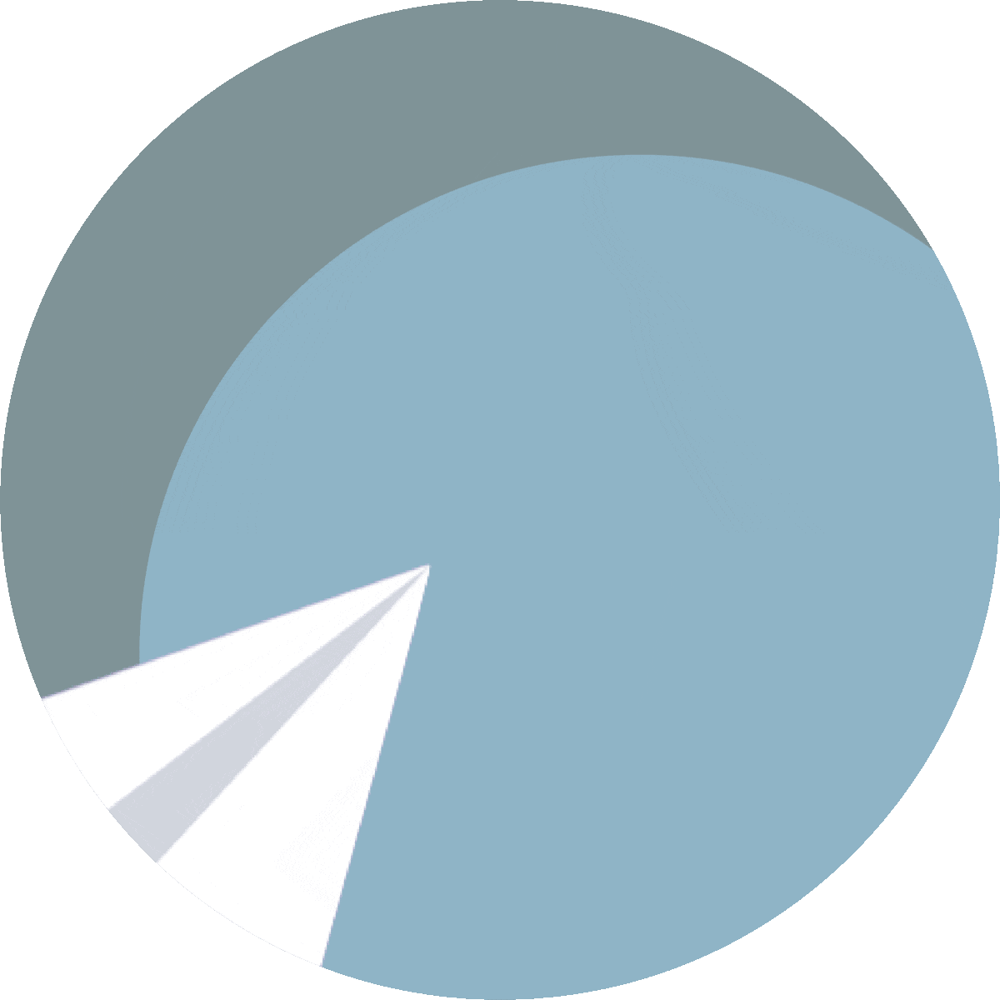

Get in touch
Lab
Room 54-319, Green Building
Massachusetts Institute of Technology
77 Massachusetts Avenue, Cambridge, MA 02139
Gaia's office is in Room 54-510.

Room 54-319, Green Building
Massachusetts Institute of Technology
77 Massachusetts Avenue, Cambridge, MA 02139
Gaia's office is in Room 54-510.
